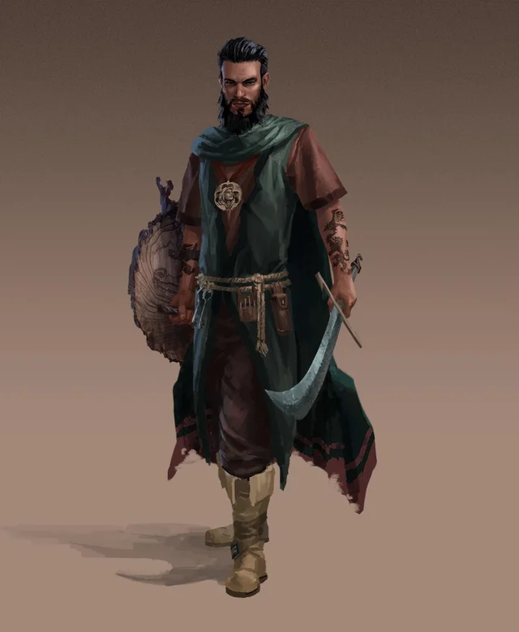

Our Heroes:
- Hector the Well Endowed

- Thalemas the Forgotten 
- Tiny Nuggins

- Nightman

Campaign 1: "The Haunted Mansion"

Our Heroes:
Episode 1:

Our story begins with 4 heroes, Hector the Well-Endowed, a Ranger, half-elf, Thalema the Forgotten, a human druid, Tiny Nuggins, a dwarven cleric, and Nightman, a human warlock.
Upon different circumstances per individual, our heroes approach the "haunted Mansion" and begin exploring the surrounding area. Utilizing his keen sense of awareness, Hector guides the team towards the garden. Here he knows something is afoul. Immediately they confront 2 Giant Weasels (25xp ea). Hector slices the head off of the first, while Thalemas stabs the second to death with 3 hard blows. After slaying the wild beasts, they approach the well where they encounter 2 Poisonous Snakes(25xp ea). After Tiny cleanly slides his longsword through the first serpent’s thoat, Thalemas uses his animal handling to tame the second. Within the well the adventurers find 14 gold pieces.
After defeating and/or taming all foes our heroes decided to enter the haunted mansion. They entered the structure from a door nearest the well where they battled the snakes. Immediately upon entering our heroes were swarmed by spiders (100xp). Here, Thalemas uses his druidic magic to burn the spiders to a crisp. Below the ash they find 5 gold pieces. As our heroes carefully advance through the mansion they decided to enter the kitchen. Upon which, they were attacked by 4 Giant Centipedes (50xp). While the first latches onto Nightman, the second is sliced in half by Thalemas, the third is struck in the head by Hector’s arrow, and the fourth is beheaded by Tiny’s sword. Regardless of its mightless struggle, the first centipede is stabbed to death by Nightman.
After dispatching the slimy creatures our travelers climb to the second story of the building where they encountered 6 Stirges (25xp) in the attic. While the Stirges do hurt our heroes, with their rapid and furious attacks, Nightman uses his knives and bravery to slash a majority of them to death. Those remaining suffered a far less quick death after being subjected to Thalemas’ serpent’s vicious poison. As the remaining Stirges writhed in agony, the heroes rummaged and find 20 gold pieces. After exiting the attic, the travelers ventured into a spare room where they found a set of relatively new clothes, considering the distress of the remainder of all other items in the building.
Still confused by the good condition of the clothing, the party moved into their next room. Here they encountered 2 more spider swarms (50xp), which are quickly devoured by our hungry serpent. Here we find 5 gold pieces. Moving to the next room our heroes find a crumbling bedroom full of nothing except a weird lantern that appears to be used for a weird singnaling system…
Episode 2
After finding the strange lantern used for signaling, our heroes also come across a man, bound and gagged. After releasing him, he identifies himself as Ned Snakeshaft; a prisoner of the villains in the haunted mansion. Ned promises to aid the adventurers in their quest as he vowes to seek revenge. Thus, our heroes give him clothing and a weapon to aid them on their mutually beneficial quests.
With their new-found adventurer, the group moves down a flight of stairs. In the livingroom they find 2 gp, in the library they find 21 gp and in the study they find 2 potions of healing. As they enter the living area they hear an ominous voice say "Welcome fools-welcome to your deaths!", ending with fiendish laughter. Immediately, they are attacked by 2 scouts (100xp) and 1 bandit (25xp). The scouts fire off their arrows. One misses, while the second strikes Tiny; albeit his armor deflects the blow. The bandit charges towards Nightman and strikes a blow to his right arm. Ned Snakeshaft draws his sword to retaliate, but instead stabs Hector in the back. Hector, wounded by the blow, turns and slashes Ned across the neck, Immediately killing the snake of a man. Meanwhile, Tiny thrusts his sword into the bandit who wounded Nightman. Thelemas works a fireball with which he incinerates a scout. The remaining scout loads another arrow only to be stabbed in both eyes by the injured Nightman with his dual daggers.
After the betrayal and battle the gang searches the room and discovers a trap door. Upon descending they discover a cellar. Inside they discover 50 gp worth of wine, plate mail, a longsword, a standard shield, and an explorers pack on a corpse. While looting the dead body, the adventurers are swarmed by a cluster of rot grubs (100xp) which are quickly roasted by Thalemas. Further exploration of the cellar brings our heroes face-to-face with 2 more bandits (25xp) and 1 scout (100xp). Hector’s intuition allows him to notice the villains first and he then warns the others. At the same time he nocks and arrow and delivers a wounding blow to the scout. Simultaneously, Thalemas, Nightman, and Tiny charge the enemies. Using their advantage of surprise, Thalemas slices open the belly of the wounded scout and Tiny rips one bandit from belly to throat. Meanwhile, Nightman attempts to thrust his daggers into the last bandit, but fails to succeed due to the bandits sudden realization of his peril. The bandit then stabs at Nightman, who dodges the attack due to his keen dexterity. Finally, it is Hector who lands his second arrow, ear to ear it exits the newly made corpse. Our heroes find 9 gp on these bodies.
Episode 3
After killing the enemies in the cellar our heroes discover notes on how to operate the signaling they discovered earlier. They then decide to move into a room that was barred from the outside. While rummaging around they find 30 gp. Then they begin to hear a strange cracking sound similar to that over bones rubbing together. Tiny, with his darkvision, notices the movement of 6 skeletons(100xp). Our party, realizing they are out matches, retreat back to the cellar for defensive positions.
As they fall back, Hector and Nightman fire arrows to seemingly no avail. Tiny holds his ground, taking multiple blows, while Thalemas charges in with his scimitar. It is here that Thalemas is struck a near mortal blow. Tiny hoists Thalemas up and falls behind Hector and Nightman who have now drawn sword and dagger. While Tiny uses Lay on Hands to heal Thalemas, Hector is slashed by the skeltons. Having saved the druid, Tiny charges in to assist Nightman as the latter draws the near dead Hector from battle. Nightman notices he can not defeat the 6 skeletons alone and cries to the team to retreat. Thalemas hastens for the room prior to the cellar and Tiny follows, Hector on his shoulder. Nightman comes to the room last and shuts the door.
Inside the room, Tiny heals Hector using the same spell used on Thalemas, while Nightman and Hector hold the door. Upon healing the half-elf, Tiny takes charge of the door. As he does so, Nightman and Hector draw their bows, while Thalemas prepares a fire spell. Once prepared, Tiny opens the door and crushes the first skeleton to pieces. Hector and Nightman fire their arrows to no avail on the meatless creatures and quickly draw their swords. Thalemas turns one skeleton to dust. The remaining 4 skeletons all hack at Tiny, but only one is able to penetrate his sturdy mail plated armor. With minor wounds, Tiny collapses yet another skeleton while Thalemas reduces another to ashes. The fifth skeleton is battered by Hector and Nightman as they jointly smash him with scimitar and daggers. The last remaining skeleton slashes at Hector, but misses due to Hector's dodging. Quickly after, Tiny turns another skeleton into a pile of bones.
Assuredly, after the battle with the skeletons our heroes would get some rest, but to their dismay they notice a glowing blue light illuminate from the room the skeletons came from. From that room and into the cellar floated The Skelton Alchemist (100xp). As he lobbed acid towards our heroes, Thalemas smote him with a significantly weak fireball. Puzzled by the weakness of the skeletons' "leader" the adventurers loot his ashes to find objects totaling in worth of 120 gp.
After defeating the skeletons, our gang moves into a set of caverns. The single entry quickly gives to a right or left split. Hector and Tiny argue which way to proceed; right or left, respectively. Utilizing his charisma, Hector convinces the party to go right. After a bit of walking, Tiny, the forward, is struck by falling green slime. Nightman, following closely behing Tiny, is acrobatic enough to dodge the burning goo. As the slime burns Tiny, he curses Hector (in a way that a majority would not consider foul).
After Tiny cleans his armor from the green slime, the party continues on. As they move through the caverns the come to an narrowing where they encounter 1 scout (100xp), 1 bandit (25xp), 1 Hobgoblin (100xp), and a man named Sanbalet (200xp). The Hobgoblin and bandit take point and prevent the heroes from approaching the others. While taking a defensive stance, the bandit's skull is crushed by Tiny's longsword. The scout fires an arrow and strikes Hector in the shoulder. Sanbalet fires a magic missile and shouts "why have you fools come to Sanbalet's lair". Upon hearing his voice, the heroes realize, it was Sanbalet who created the Magic Mouth spell to alert the other villains. While the magic missle misses, the Hobgoblin is yet able to slash into Tiny, despite his strong armor. Meanwhile, Hector misses his arrow shot due to him being hit and Thalemas strikes a fireball into the Hobgoblin to little effect. Then, Sanbalet fires another magic missile shouting "I AM SANBALET", this time hitting Tiny to devastating effect. It is here that Nightman, in a daring attempt, uses his spell blur to distort images for the Hobgoblin and slip past him. With Tiny barely alive, Nightman moves past the Hobgoblin and is able to insert to daggers in Sanbelet's belly and slice them out towards his sides. While confused by the blur spell, Hector is able to use his scimitar to slash the neck of the Hobgoblin. In a fit of near-death rage, the confused Hobgoblin slashes at Tiny, only to be forever silenced by a swift blade to his throat from Thalemas.
While dying, Sanbalet asks the heroes "why have you done this to Sanbalet?" They responded by mocking his name and informing him that his "haunted-mansion" was a bane to the community. Upon hearing "haunted-mansion" Sanbalet informs the group that he was merely smuggling, an act widely accepted in Saltmarsh. Before the adventurers can ask more questions, Sanbalet succumbs to his wounds. While Interogating the dying Sanbalet, the heroes notice the scout scurry off into the caverns.
With questions about Sanbalet's claims of accepted smuggling still lingering in their minds' and needing to pursue the scout, the party ventures down the next section of the caverns, this time silently...
Episode 4
As the our adventures move quietly down the dark caverns in pursuit of the scout, they turn a corner a notice her with bow drawn; albeit not at them, but at another creature. Suddenly, Tiny’s digestive system releases an undesirable and rather loud spew of gas – a monstrous fart! With all heroes aghast, the scout turns her bow to them, but she immediately wrapped into some strange, rapidly growing vine spell. While the scout is subdued, the characters turn their attention to the creature; a satyr by the name Billy Stubhorn. All parties agree that they are in the same boat – clearing the cave and the haunted mansion. Soon after their greetings, the party notices a hobgoblin moving towards them. Our newest hero, Billy, cloaks the party with a spell. Immediately after, he uses another vine spell to wrap the hobgoblin just like the scout. With both villains bound, the group interrogates them for information pertaining to Sanbalet’s smuggling operation. Although the monsters offer little information, they do inform the party that Sanbalet was indeed a smuggler and he was working with other smugglers from an offshore boat. The party leaves their enemies out of pity and load an idle row boat with newfound bolts of silk and casks of brandy, headed back to Saltmarsh.
Upon arriving in town a group of fishermen harass the group about their “stolen” goods, claiming the items were stolen from the town’s citizens and should be returned. However, city council members, Eda Oweland, Gellan Primewater, and Anders Solmor arrive to break up the potential scuffle. The three councilors thank the party for their service at the haunted mansion, pay them, and then commence to argue about differences between “smuggling” and “free-trade”. While Anders and Gellan are in a heated debate, Eda informs the party that Saltmarsh has a long history of smuggling goods generally deemed by the King of Keoland as contraband. Typically it simply includes simple items that various either place undesirable tariffs on or ban outright for numerous political and taxable reasons. However, at times this smuggling has manifested into arms dealing, piracy, and slave trading – including the capturing and selling of citizens of Saltmarsh. Hence, the position of “free-trade” held be Gellan Primewater isn’t as clean cut as he makes it to be. Likewise, considering the poverty and general neglect of Saltmarsh by Keoland, the points Anders Solmor make could be construed as a lack of concern for the wellbeing of Saltmarsh. Nonetheless, with questions of whose side to take still fresh in their minds, the gang is asked to return to the City Council once well rested.
After resting, the heroes decide to run a few errands. They first stop at Winston’s Store (run by a hafling named Winston). Here they buy a map of the Hool Marshes (!!!!COULD BE IMPORTANT!!!). Next, they move to the Cementry, where Krag the Orc offers to help them by providing the information he has in future adventures around Saltmarsh and its surrounding areas. Finally, they stop at Xendros’ Faithful Quartermaster of Iuz, ran by the “devil lady” Xendros. Here they sell magical items found and she informs them of future work if they desire more money or in exchange for magic items she can acquire. After their mutual errands, the party disperses and they all pursue individual training and/or tasks.
After their errands, the party returns to the City Hall and are briefed on their next mission, if they choose to accept. They are told to use the Bullseye lantern found at the Haunted Mansion to draw in the smuggling ship Sanbalet’s minions mentioned. They will be given a row boat and 2 guards to ferry them to the ship and they are to end this smuggling once and for all. Although Gallen Primewater maintains his position that smuggling is simply free-trade, he does agree that arms smuggling is likely linked to the Sea Princes – a group of pirates that live to the south of Saltmarsh and have historically engaged in raiding and slaving along the coast, including Saltmarsh. The adventurers are told to be on stand-by as the boat could arrive anytime at night.